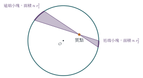
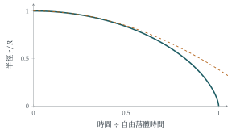

STEP III 1999，第 9 題
繼續之前，請先閱讀題目（原題為英文）。題目載於 STEP Support Programme 的題目資料庫： step.maths.org/questions/99-s3-q9
引子
試想像一顆空心的行星：一層薄薄的岩石球殼（spherical shell），裏面空無一物。假如你站在球殼內靠近殼壁的地方，也許會以為自己會被附近的岩石吸過去。事實上你會浮在原處：球殼內任何一處，球殼的引力都恰好是零。球殼較近的一側距離較短，但較遠的一側面積較大，兩種效應剛好完全抵銷。
這就是牛頓球殼定理（Newton’s shell theorem）。牛頓（Newton）花了多年才把它證明出來，而它對牛頓的引力理論至為重要：連同與它配對的另一個結果（在球體之外，引力就如全部質量都集中在球心一樣），它說明了為何可以把地球和太陽當作點來處理。在練習和「背後的數學」一節中，我們會用這個定理計算一團氣體雲塌縮成恆星需要多少時間。
動筆之前
考慮圓環上兩小段位於同一直徑兩端的部分。畫出它們對質點（particle）所施的力。哪些分量（component）互相抵銷，哪些相加？
這兩小段與質點的距離相同。它們的引力沿軸方向的分量相等，因而相加；垂直於軸的分量大小相等、方向相反，因而抵銷。把整個圓環這樣逐對配起來，可知合力沿着軸，指向圓環的中心。
逐步解題
階段 1 圓環
圓環上每一小段與質點的距離都是 \(\sqrt{x^2 + r^2}\)，而連接兩者的直線與軸成角 \(\psi\)，其中 \(\cos\psi = \frac{x}{\sqrt{x^2 + r^2}}\)。質量為 \(\delta m\) 的一小段所施的引力為 \(\frac{G\,\delta m}{x^2 + r^2}\)，其中沿軸方向的分量為 \(\frac{G\,\delta m}{x^2 + r^2}\cdot\frac{x}{\sqrt{x^2 + r^2}}\)。每一小段的距離和角度都相同，所以這些分量直接相加，得 \[\frac{Gmx}{(x^2 + r^2)^{3/2}}. \qed\]
階段 2 把球殼切成圓環
設球殼的中心為 \(O\)，質點位於軸上，與 \(O\) 相距 \(b\)。把球殼切成多個垂直於軸的薄圓環，並以圓環上的點在 \(O\) 處與軸所成的角 \(\phi\) 來標記各圓環。圓環的半徑、位置和質量分別是甚麼？
角度為 \(\phi\) 的圓環半徑為 \(a\sin\phi\)，其中心沿軸與 \(O\) 相距 \(a\cos\phi\)，因此與質點相距 \(a\cos\phi - b\)。圓環的寬度為 \(a\,\delta\phi\)，所以面積為 \(2\pi a\sin\phi \cdot a\,\delta\phi\)，佔球殼面積 \(4\pi a^2\) 的 \(\frac12\sin\phi\,\delta\phi\)。它的質量是 \(\frac12M\sin\phi\,\delta\phi\)。根據第 1 階段的結果，它沿着軸把質點拉向 \(\phi = 0\) 的一端，力的大小為 \[\frac{G\cdot\frac12M\sin\phi\,\delta\phi\,(a\cos\phi - b)}{\bigl((a\cos\phi - b)^2 + a^2\sin^2\phi\bigr)^{3/2}} = \frac{GM}{2}\cdot\frac{(a\cos\phi - b)\sin\phi\,\delta\phi}{(a^2 - 2ab\cos\phi + b^2)^{3/2}}.\] （正負號會自動處理妥當：位於質點前方、滿足 \(a\cos\phi > b\) 的圓環把質點拉向一方，位於質點後方的圓環則把它拉向另一方。）
階段 3 合適的變量
分母含有 \(s^2 = a^2 - 2ab\cos\phi + b^2\)。\(s\) 在幾何上代表甚麼？\(\mathrm{d}s\) 以 \(\mathrm{d}\phi\) 表示是甚麼？
根據餘弦定理（cosine rule），\(s\) 是質點到圓環的距離。求導可得 \(2s\,\mathrm{d}s = 2ab\sin\phi\,\mathrm{d}\phi\)，而由 \(s^2 = a^2 - 2ab\cos\phi + b^2\) 解出 \(a\cos\phi\)，可得 \(a\cos\phi - b = \frac{a^2 - b^2 - s^2}{2b}\)。所以合力為 \[\frac{GM}{2}\int \frac{a^2 - b^2 - s^2}{2b\,s^3}\cdot\frac{s\,\mathrm{d}s}{ab} = \frac{GM}{4ab^2}\int_{a - b}^{a + b}\Bigl(\frac{a^2 - b^2}{s^2} - 1\Bigr)\mathrm{d}s,\] 其中 \(s\) 由 \(a - b\)（最近的點，\(\phi = 0\)）變到 \(a + b\)（最遠的點，\(\phi = \pi\)）。
階段 4 結果為零
\[\int_{a-b}^{a+b}\Bigl(\frac{a^2 - b^2}{s^2} - 1\Bigr)\mathrm{d}s = (a^2 - b^2)\Bigl(\frac{1}{a - b} - \frac{1}{a + b}\Bigr) - 2b = (a^2 - b^2)\cdot\frac{2b}{a^2 - b^2} - 2b = 0.\] 球殼對質點不施任何力。■
如果質點在球殼之外，即 \(b > a\)，情況會有甚麼不同？\(s\) 的上下限變成 \(b - a\) 和 \(b + a\)。重做最後一行，並證明所受的力為 \(\frac{GM}{b^2}\)，指向球心，就如全部質量都集中在球心一樣。
回顧
先看對稱性（symmetry）。把相對的小段配對，未經任何計算便已看出力的方向。
由較簡單的形狀逐步建構。點組成圓環；圓環組成球殼。
選擇切合物理情境的變量。把變量由角 \(\phi\) 換成距離 \(s\)，一個棘手的積分便變得輕而易舉。
背後的數學
牛頓的圓錐論證
牛頓本人的證明（《自然哲學的數學原理》（Principia）第一卷命題 70）完全沒有用到積分。以質點為頂點，畫一個狹窄的對頂圓錐，它在球殼上截出兩小塊曲面（圖 10.7.1）。這兩小塊的面積與它們到質點的距離的平方 \(r_1^2\) 和 \(r_2^2\) 成正比（兩小塊與圓錐所成的角相等，因為一條弦在兩端與圓所成的角相等）。所以它們的質量與 \(r_1^2\) 和 \(r_2^2\) 成正比，而它們的引力與質量除以距離平方成正比，因此大小相等、方向相反。每一個通過質點的對頂圓錐都互相抵銷，所以合力為零。這種抵銷之所以成立，正是因為平方反比定律（inverse-square law）：若換成距離的任何其他次方，球殼便會對質點產生推力或拉力。

塌縮的雲團
STEP III 1987 Q14 把這個定理反過來用。在均勻球體之外，位於球面的質點所受的引力為 \(GMm/r^2\)，就如全部質量都集中在球心一樣。現在取一團靜止的均勻球狀塵埃雲，半徑為 \(R\)，質量為 \(M\)，讓它在自身引力下塌縮。球面上的質點只感受到它以內的質量，而在所有物質向內墜落的過程中，這質量一直是 \(M\)，所以它向內的速率 \(v = -\dot r\) 滿足 \[v\frac{\mathrm{d}v}{\mathrm{d}r} = -\frac{GM}{r^2}, \qquad\text{所以}\qquad v^2 = 2GM\Bigl(\frac1r - \frac1R\Bigr).\] 代入 \(r = R\cos^2\alpha\)（其中一道練習），可得到達半徑 \(r\) 所需的時間為 \(\sqrt{\frac{R^3}{2GM}}\bigl(\alpha + \frac12\sin 2\alpha\bigr)\)。當 \(\alpha = \frac\pi2\) 時，整團雲塌縮成一點，所需時間就是自由落體時間（free-fall time） \[t_{\text{ff}} = \frac{\pi}{2}\sqrt{\frac{R^3}{2GM}} = \sqrt{\frac{3\pi}{32G\rho}},\] 其中 \(\rho\) 是密度。值得注意的是，雲團的每一層球殼都在同一刻到達中心，因為這個時間只取決於密度（圖 10.7.2）。對於一團典型的星際雲，每立方米約有 \(10^{-17}\) kg，\(t_{\text{ff}}\) 約為 \(700\,000\) 年：這決定了恆星形成的時間尺度。

牛頓早在 1660 年代已掌握平方反比定律，但到 1687 年才發表他的引力理論。據一些歷史學家所說，其中一個原因是他在證明球殼定理之前，無法說明為何可以把地球當作點質量（point mass）；一旦證明了，《自然哲學的數學原理》的其餘部分便水到渠成。今天，這個定理只是高斯定律（Gauss’s law）的一個簡短推論。高斯定律指出，穿過任何閉合曲面向外流出的引力場總量，與曲面內的質量成正比。在球殼內取一個同心的球面。它沒有包圍任何質量，所以穿過它的總流量為零。單憑這一點並不足以令場為零（均勻場穿過任何閉合曲面的總流量都是零，從一邊流入，從另一邊流出），但這裏對稱性幫了忙：場必定筆直指向球心或背離球心，而且在球面上各處強度相同，所以總流量為零就意味着場為零。同一條定律也支配電場，這就是為甚麼帶電金屬殼內沒有電場，也是為甚麼汽車能保護你免受雷擊。
思維技巧
要求出一個連續物體的效應，可把它切成效應已知的小塊，再把它們加起來。利用對稱性來選擇怎樣切。
點組成圓環，圓環組成球殼，球殼組成實心球。在大學裏，每一種場（引力場、電場、磁場）都是這樣由場源計算出來的，由此更引出高斯（Gauss）定理和斯托克斯（Stokes）定理的向量微積分（vector calculus）。
延伸練習
球殼之外。完成「暫停思考」方框中的問題：證明在球殼之外，所受的力為 \(\frac{GM}{b^2}\)。由此推斷，質量為 \(M\) 的均勻實心球對球外質點的引力，就如其質量集中在球心一樣。
塌縮時間。試做 STEP III 1987，第 14 題。這道題求一團塵埃雲在自身引力下塌縮需要多少時間；用三角代換（trigonometric substitution）便可算出積分。
穿越地球的隧道。證明在均勻實心球之內，與球心相距 \(b\) 處所受的力為 \(\frac{GMb}{a^3}\)，與 \(b\) 成正比。由此推斷，把一個球投進一條穿過地球中心的隧道，它會來回振盪，週期（period）為 \(2\pi\sqrt{a^3/(GM)}\)，約 \(84\) 分鐘，與一顆貼着地面飛行的衛星的週期相同。
另一種力的定律。假如引力遵從立方反比定律，球殼內所受的力是否仍然為零？（重做第 3 階段，以 \(\frac{1}{s^3}\) 取代 \(\frac{1}{s^2}\)。）
延伸閱讀
Daniel Kleppner & Robert Kolenkow, An Introduction to Mechanics（Cambridge University Press），關於萬有引力的章節，當中包括球殼定理。
Subrahmanyan Chandrasekhar, Newton’s Principia for the Common Reader（Oxford University Press）。由一位諾貝爾獎得主講解牛頓的證明，包括命題 70 和 71。
Andrew Pontzen, The Universe in a Box（Riverhead）。講述引力、塌縮和模擬如何解釋宇宙的結構。